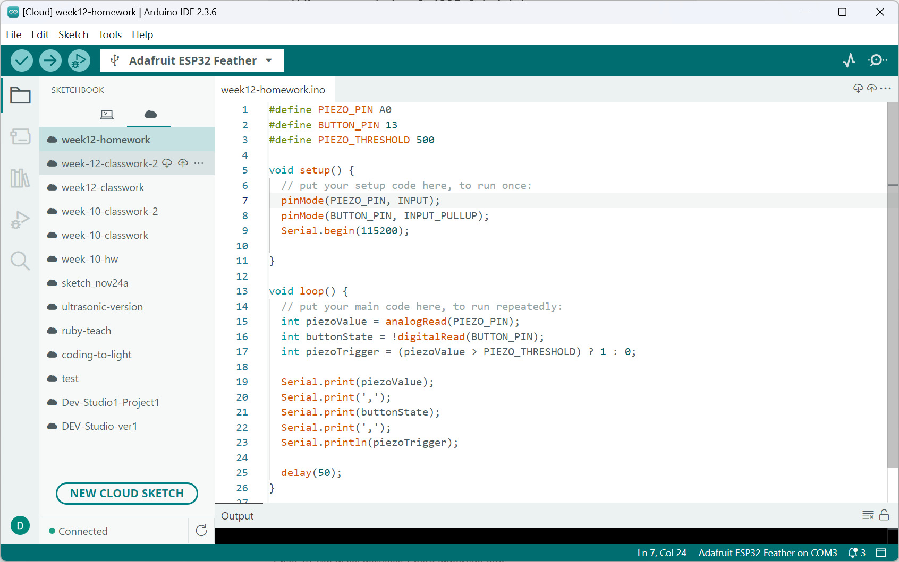
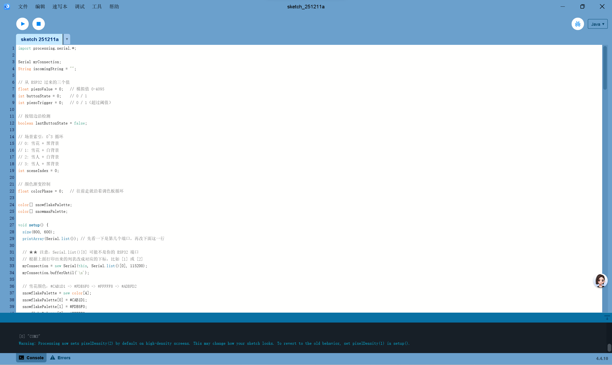
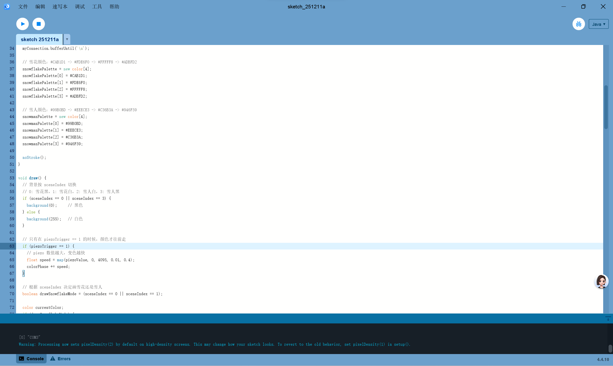
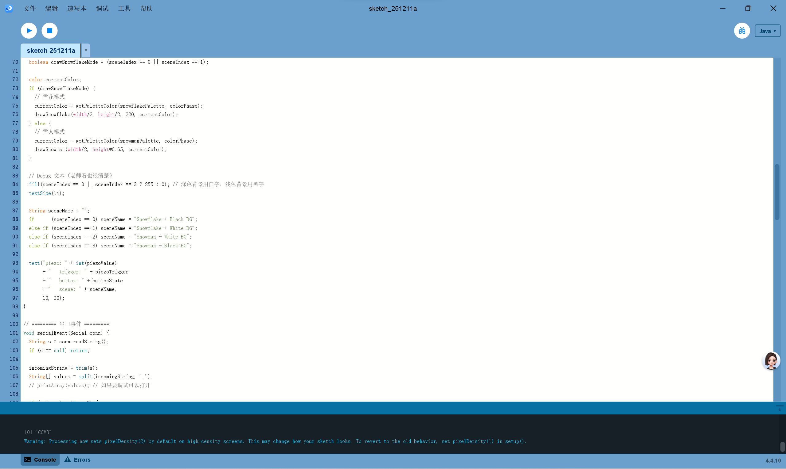
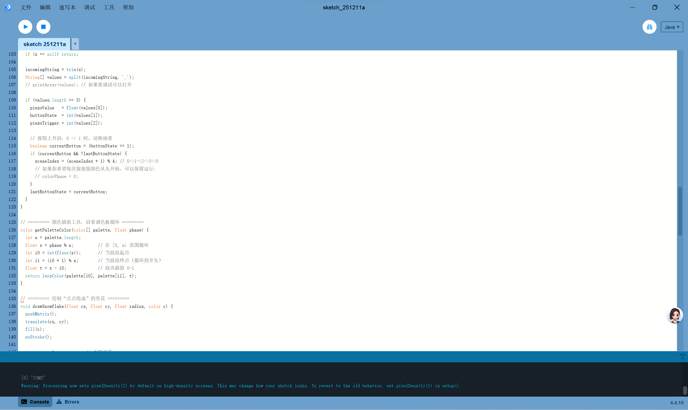
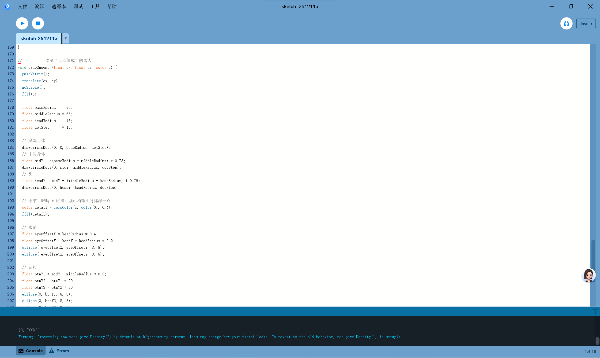
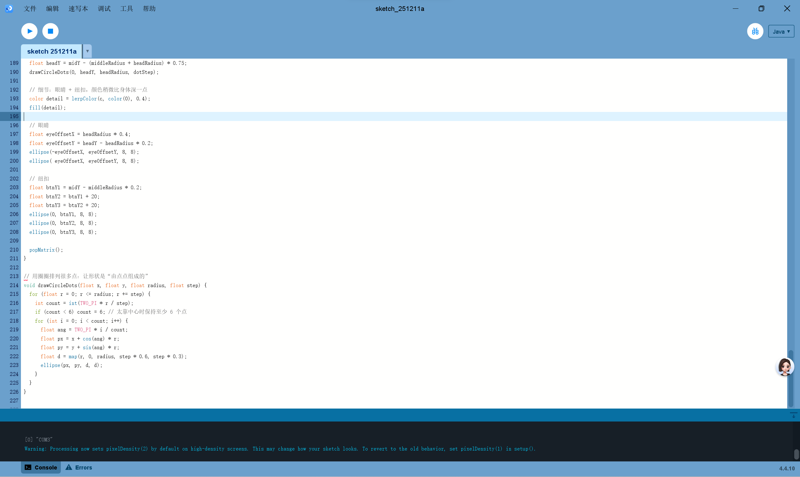

Screenshots







Documentation of Multichannel Controller
Hardware Used
This project uses an ESP32 microcontroller connected with a
piezo sensor and a digital input push button.
The piezo sensor is used to detect tapping or vibration, which controls
the **color transition speed** in the Processing animation.
The digital button is used to switch between different **display modes**
(snowflake / snowman and background variations).
Sensor values are sent via serial communication from ESP32 to Processing,
where they are mapped into visual changes.